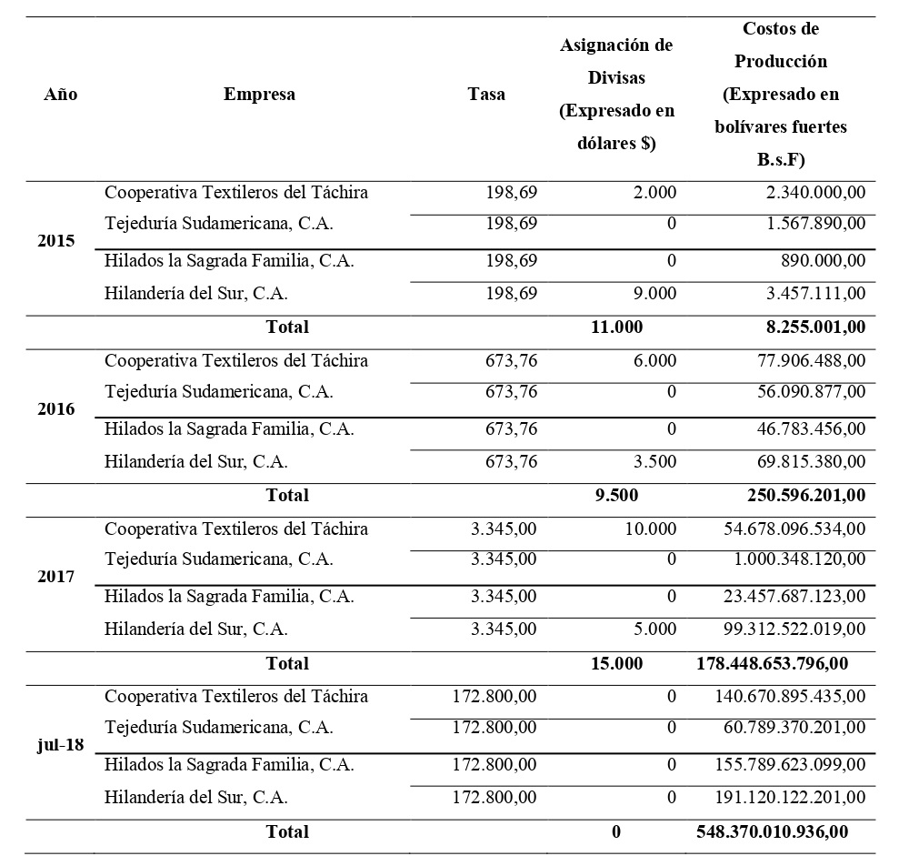
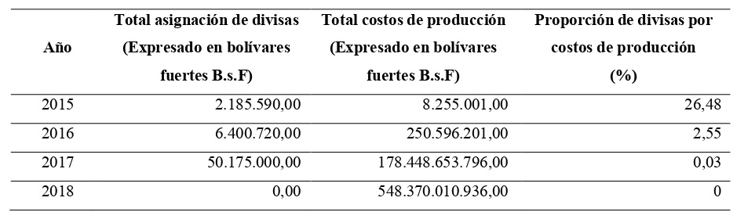
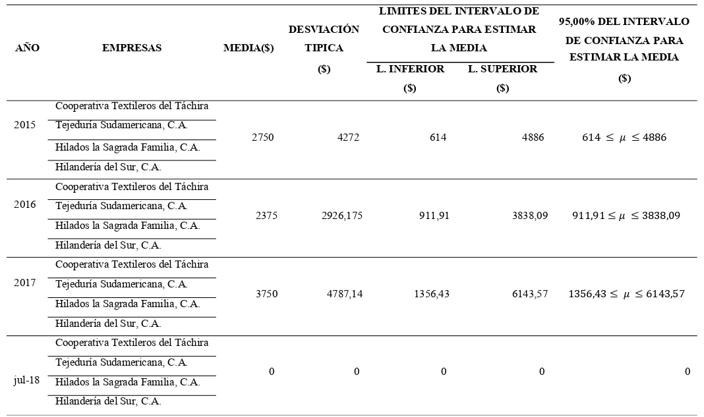
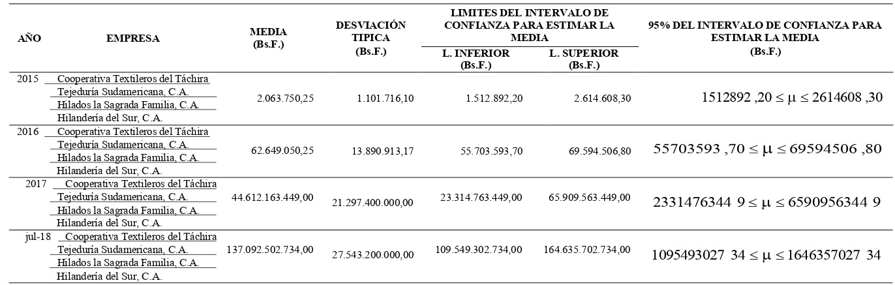
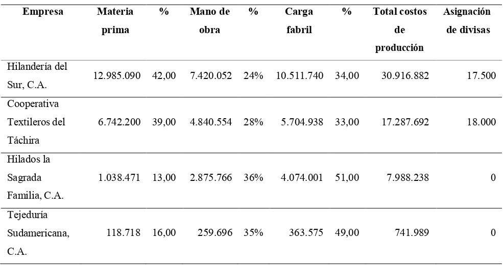

a* Licenciada en Administración.
yamali.camero@gmail.com.
Licenciada en Administración.
yamali.camero@gmail.com.
Cómo citar: : Camero Barrera, Y. A. (2022). Control cambiario: estudio de la incidencia en los costos de producción de las empresas del sector textil, vol.5, no 1, [59 -84]. DOI: https://doi.org/10.22463/27111121.3508
©Peer review is the responsibility of the Universidad Francisco de Paula Santander. This is an article under the license CC BY-ND.

*Autor para correspondencia yamali.camero@gmail.com
Recibido: Abril 28,2021
Aceptado: Mayo 11, 2021
Keywords
Exchange control, Foreign exchange, Production costs, Textile industryc.
Abstract
The purpose of this research is to evaluate the incidence of exchange control on the production costs of textile companies in San Cristóbal, Táchira State. The study is theoretically supported by Daniel Stufflebeam's evaluative model known as CIPP, which is oriented to decision making. Methodologically, it has a quantitative approach, descriptive in nature, with the application of a field research design where the population consisted of a total of sixteen (16) managers belonging to companies in the textile sector in San Cristóbal, whose sample corresponds to the entire population. A survey consisting of a questionnaire of fifteen (15) closed questions of the checklist type and the handling of files was used to determine the amount of foreign currency allocated and production costs. The study allows concluding that the exchange control as an economic measure that regulates the allocation of foreign currency by the State has had a negative impact on production costs, which are not sufficient to cover the production costs of the companies in the textile sector in San Cristobal, decreasing substantially, for 2015 it was 26.48%, for 2016 it was 2.55%, for 2017 it was 0.03% and until July 2018 there has been no allocation. It is recommended to make alliances with companies in the sector, suppliers and universities to employ production strategies and not rely solely on foreign currency.
Palabras claves
Control cambiario, Divisas, Costo de producción, Industria textil.
Resumen
La presente investigación tiene como propósito evaluar la incidencia del control cambiario en los costos de producción de las empresas del sector textil de San Cristóbal, estado Táchira. El estudio se sustenta teóricamente mediante el modelo evaluativo de Daniel Stufflebeam conocido como CIPP, el cual está orientado a la toma de decisiones. Metodológicamente, tiene un enfoque cuantitativo, de carácter descriptivo, con la aplicación de un diseño de investigación de campo donde la población se conformó por un total de dieciséis (16) directivos que pertenecen a las empresas del sector textil en San Cristóbal, cuya muestra se corresponde con la totalidad de la población. Se empleó una encuesta formada por un cuestionario de quince (15) preguntas cerradas tipo lista de cotejo y el manejo de archivos para determinar la cantidad de divisas asignadas y los costos de producción. El estudio permite concluir que el control cambiario como medida económica que regula la asignación de divisas por parte del Estado ha incidido negativamente en los costos de producción, las cuales no son suficientes para cubrir los costos de producción de las empresas del sector textil de San Cristóbal, decreciendo de forma sustancial, para el 2015 fue de 26,48%, para el 2016 fue de 2,55%, para el 2017 fue de 0,03% y hasta julio de 2018 no ha habido asignación. Se recomienda realizar alianzas con las empresas del sector, proveedores y universidades para emplear estrategias de producción y no depender únicamente de divisas extranjeras.
Introducción
El estado venezolano en los últimos años ha aplicado una serie de medidas económicas, dentro de las cuales se enmarca el control de divisas, ajustado a un programa cambiario expuesto a constantes cambios, en relación con normas y providencias administrativas que le ha permitido regular todo lo concerniente a la adquisición de moneda extrajera, para controlar las entradas y salidas de capital. Durante el año 2015 el sistema cambiario en Venezuela estuvo compuesto por tres mecanismos: el primero consistía a una tasa preferencial suministrada por el Centro Nacional de Comercio Exterior (CENCOEX) para los productos de primera necesidad, alimentos y medicinas. El segundo correspondía al Sistema Complementario de Administración de Divisas (SICAD) destinado a sectores productivos específicos convocados a subasta y por último se estableció el Sistema Marginal de Divisas (SIMADI) el cual era un sistema abierto que fluctuaba de acuerdo con el mercado. Además, de estas tres bandas cambiarias la existencia de un mercado paralelo en donde los usuarios accedían de manera ilegal pero más rápido para la obtención de divisas. Para los años 2016 y 2017 se mantuvo dos sistemas cambiarios: Sistema de Divisas Protegido (DIPRO) para bienes y servicios y remesas identificadas como prioritarias, así como Sistema de Divisas Complementario (DICOM) para todas las transacciones no incluidas en el DIPRO. Para el 2018 se elimina el tipo de cambio DIPRO y queda vigente para todas las operaciones cambiarias el tipo de cambio DICOM.
Estos mecanismos de control cambiario han ocasionado perturbaciones en la economía venezolana, con procesos engorrosos, requisitos extensos y con limitaciones en la cantidad de divisas otorgadas. De allí su incidencia en el sector primario, secundario y terciario, particularmente con la disminución en la producción, la operatividad financiera y el crecimiento económico del sector textil, con una marcada tendencia en la adquisición de divisas en mercados alternos, que encarecen los costos de producción y la propia comercialización. Después de la fuerte crisis económica y política que experimentó Venezuela en el 2002, el gobierno venezolano estableció el control cambiario, como medida de política cambiaria para evitar la fuga de capitales; desde que éste se implementó en Venezuela en el 2003. Los venezolanos se han visto en la necesidad de acostumbrarse a un cambiante y riguroso proceso de obtención de divisas, realidad en la cual los usuarios se ven inmerso en reglamentaciones cambiantes y rigurosas, en la creación de varios organismos gubernamentales de control cambiario para realizar funciones similares, pero con reglamentaciones diferentes y más complejas para la obtención de una más limitada cantidad de dólares americanos (Vera, 2015). Según el Centro Nacional de Comercio Exterior (2014), define el control de cambio como: “Un instrumento de política cambiaria que consiste en regular oficialmente la compra y venta de divisas en un país. De esta manera, el Gobierno interviene directamente en el mercado de moneda extranjera, controlando las entradas o salidas de capital.” (s/p)
El control cambiario a través de sus medidas influye sobre el mercado que da origen a la demanda y oferta de dólares, de esta manera, Figueroa (2015), manifiesta que el gobierno tiene el control mediante sus respectivos órganos de decidir la cantidad de divisas otorgadas a cada empresa según el rubro al cual se dediquen, son tratadas de diferentes maneras y por orden de prioridad. Sin embargo, no siempre es una manera eficiente de tener un punto de equilibrio entre la demanda y oferta. León (2014), afirma que la cantidad de divisas aprobadas no son las suficientes para los empresarios lo que acarrea la compra de divisas en mercados no legales, operación comercial fraudulenta conocida como adquisición de dólar paralelo, por tanto, uno de los principales efectos más considerables de la política del control cambiario es el crecimiento de la inflación, debido a que conlleva al alza de los costos particularmente a las industrias que transforman y elaboran productos con base en materias primas importadas.
Sobre la base de las consideraciones anteriores, Abadí (2015), explica que, el sistema cambiario presentado en febrero de 2015, por el Vicepresidente del Área Económica de la República Bolivariana de Venezuela, Rodolfo Marco Torres y el presidente del Banco Central de Venezuela (BCV), Nelson Merentes, estuvo compuesto por tres (3) mecanismos que permitieron optimizar el uso de las divisas, para impulsar al sector productivo del país y garantizar los recursos necesarios para realizar las importaciones de alimentos, medicamentos, insumos y productos básicos que requieren los venezolanos. Es evidente, que para las empresas de los diferentes sectores económicos del país que adquieren sus insumos en el exterior, obtener divisas acarrea unos lineamientos establecidos a seguir, lo cual ocasiona retraso para su obtención, pues no sólo es el hecho de las pocas divisas asignadas insuficientes para los empresarios, si no que la adjudicación de las mismas no garantiza su pronta liquidación; por lo que, esta situación le ocasiona a las industrias transformadoras de materia prima atraso en su proceso productivo lo que conlleva a la insatisfacción de sus clientes. Uno de los sectores afectados por estas políticas cambiarias es el textil, siendo este sector pionero en la revolución industrial, generador de considerables cantidades de empleos, los textiles son productos de consumo masivo vendidos en grandes cantidades, lo que abarca la producción de hilos, telas, fibras y confección.
La industria textil se ha visto afectada por las importaciones y la entrada ilegal de prendas de vestir terminadas al mercado venezolano a bajo costo, lo que ha dejado en desventaja no sólo a la producción nacional de confección, sino también, a la producción de la materia prima para la confección (abarca producción de algodón y elaboración de telas), debido a que era más económico importar dichas piezas que producirlas. De esta manera, varios productores de algodón a nivel nacional cesaron la producción porque no había incentivo para invertir. La industria textil venezolana de acuerdo con Arrieta (1981), para el año 1980 satisfacía un 40,00% de la demanda nacional de este sector y el 60,00% restante había que importarlo. Es decir, el mercado consumía 90.000 toneladas de tela, de las cuales 50.400 toneladas eran importadas y el 55,00% de éstas entraban al país de manera ilegal.
Esta situación se ha complicado con el pasar de los años, la producción nacional se ha visto afectada no sólo por las importaciones del producto terminado, sino por el cierre de empresas productoras de algodón y por las políticas poco coherentes establecidas para la adquisición de divisas. Parilli (2014), manifiesta que Marcelo Mañan, presidente de las empresas nacionales Hilanderías Hilcor y director de Algopor expresa que para el 2014, el consumo per cápita se encontró entre 7 y 8 kilos de algodón, la producción en el territorio venezolano no llegó ni a cubrir el 5,00% de la demanda nacional y al pasar de los años se ha visto disminuida. Es evidente, la preocupante situación por la que está pasando la industria textil venezolana, en relación con su materia prima (algodón) es escasa; debido a que la producción nacional de este rubro es insuficiente para cubrir la demanda nacional. La adquisición de divisas para importar un producto como éste es un proceso engorroso, como lo menciona León (2013), se presentan atrasos en los certificados de no producción y también en la liquidación de las divisas; mientras las industrias textiles esperan por la adjudicación, sus costos fijos, tales como contratos de servicios públicos y mano de obra continúan así produzcan o no.
Por tal motivo, en un ambiente tan cambiante en el que se encuentran las empresas dentro del país, es fundamental proteger el flujo de caja, pues la necesidad de moneda local para adquirir insumos nacionales o moneda extranjera para importar son mayores. Dada la situación acontecida se tiende a agravar el cobro a los clientes pues también su poder adquisitivo disminuye, por lo tanto, la entrada de dinero para pagos a proveedores. Se hace necesario incentivar la producción nacional de algodón, alianzas con proveedores nacionales, alianzas estratégicas entre los empresarios del mismo sector y apoyo del gobierno al sector privado para que éstos inviertan y así reactivar el aparato productivo. A tal efecto, es de vital importancia una valoración de los elementos que inciden en el control cambiario dentro de los costos de producción de las empresas del sector textil de la ciudad de San Cristóbal estado Táchira, por lo tanto, esta investigación permite la identificación de las circunstancias en que está inmerso el sector de la producción nacional, lo que ofrece una serie de alternativas claves para los propios gestores del sector en cuanto a la formulación de los verdaderos costos que repercuten en la fabricación, comercialización y sustentabilidad del producto en el mercado.
Metodología
Esta investigación se enmarca en un enfoque cuantitativo, permite dar respuesta a través de un proceso de medición ajustado a un plan que mide las variables y por ende establece una serie de apreciaciones producto de las conclusiones obtenidas a través del análisis de la investigación. El reporte final de los resultados, se basa en datos reales de una problemática actual del país, donde se recogieron los datos directamente de los hechos, mediante un estudio comparativo entre cuatro empresas del sector textil en la ciudad de San Cristóbal estado Táchira (Cooperativa Textileros del Táchira, Tejeduría Sudamericana, C.A., Hilados La Sagrada Familia, C.A. e Hilandería del Sur, C.A.). Asimismo, esta investigación es de carácter descriptivo, puesto que a través de las variables objeto de medición, se recolectó información que permite describir el fenómeno estudiado, en cuanto a la incidencia del control cambiario en los costos de producción del sector textil.
Esta investigación se orienta en un estudio de campo, puesto que los datos fueron obtenidos directamente de la realidad. Es decir, por los integrantes de las juntas directivas que conforman cada empresa textilera de San Cristóbal, con lo que se garantiza un nivel de confianza de la información obtenida. En una primera fase se diseñó un cuestionario para conocer los mecanismos que las empresas textileras de San Cristóbal estado Táchira siguen para la adquisición de divisas y para determinar los factores del control cambiario que inciden en los costos de producción. En una segunda fase se aplicó el cuestionario diseñado en la Fase I a los directivos de las empresas textileras de San Cristóbal estado Táchira, para contrastar los mecanismos que siguen para la adquisición de divisas y determinar los factores del control de cambio que inciden en los costos de producción. En una tercera fase, a través de la información proporcionada por el Departamento de Finanzas de cada empresa textil, se obtuvo información acerca de las divisas asignadas, la tasa y sus costos de producción tomando en cuenta el periodo 2015-2018, para medir la incidencia del control cambiario en los costos de producción.
En esta investigación la muestra estuvo integrada por dieciséis(16) directivos de las empresas textileras de San Cristóbal estado Táchira, con el objeto de obtener los datos de interés para el estudio de toda la población objetivo, sin que se trate estrictamente de un censo (Arias, 2016). Adicionalmente, en esta investigación se tomó como técnica la encuesta y como instrumento un cuestionario tipo lista de cotejo, para obtener información de los 16 directivos del sector textil de San Cristóbal estado Táchira.
Revisión literaria
Control cambiario
Es una intervención del Estado para separar artificialmente en la economía a los ofertantes y demandantes de divisas, el Estado es quien establece las medidas y políticas cambiarias para controlar las entradas y salidas de moneda extranjera en el país. Valdés (1989), manifiesta que el control cambiario es “Un conjunto de medidas administrativas a través de las cuales los gobiernos impiden que el precio de al menos una divisa extranjera sea el mismo para todos los distintos interesados en adquirirla y para todos los interesados en venderla”(p. 117), de esta manera, a través de diferentes mecanismos el gobierno es quien determina a quien le vende, cuanto y a qué precio le vende las divisas, es decir, se limita el derecho de las personas naturales o jurídicas de comprar divisas.
Para el Centro Nacional de Comercio Exterior, CENCOEX (2014), el control de cambio es: “Un instrumento de política cambiaria que consiste en regular oficialmente la compra y venta de divisas en un país. De esta manera, el Gobierno interviene directamente en el mercado de moneda extranjera, controlando las entradas o salidas de capital” (s/p). De acuerdo a lo expuesto, el control cambiario es una medida oficial en el mercado de divisas, que toma el Estado para proteger la moneda local y las reservas internacionales de un país, orientado a controlar la compra y venta de moneda extranjera, quedando restringida la libre convertibilidad entre la moneda nacional y la de otro país; esta medida abarca dos aspectos principales, los cualesson: la fijación del tipo de cambio, es decir, el precio que una moneda adquiere al convertirse en otra y la cantidad de divisas asignadas a los usuarios.
Según el CENCOEX (2014) “El control de cambio no es bueno o malo por sí mismo. Su efectividad depende de las causas que lo han hecho necesario, de los objetivos de su aplicación y de la forma en que opere en la práctica” (s/p). En efecto, el control cambiario se establece para evitar la fuga de capitales, disminución de las reservas internacionales, alza de precios producto de una devaluación de la moneda nacional, excesiva demanda de divisas que exceda las necesidades reales de la economía nacional y para ejercer control sobre cierto tipo de importaciones.
Historia del control cambiario
Es importante conocer el origen mundial del control cambiario, a tal efecto, en los estudios realizados por Nogueira (2006) señala:
La Segunda Guerra Mundial trajo consigo el control de cambios en todas partes y terminó con una buena parte de lo que restaba del elemento de cooperación en las relaciones monetarias internacionales. Al final de esa contienda la mayoría de los países beligerantes, especialmente los perdidosos Alemania y Japón sufrían diferentes grados de destrucción y sus economías dependían, casi exclusivamente, de los productos que se fabricaban en los Estados Unidos. Así el dólar norteamericano se constituyó en la moneda de reserva, desempeñando un papel fundamental en este nuevo sistema. Además, su libre convertibilidad en oro lo transformó, indirecta pero realmente, en un patrón de paridad y en la moneda mundial.
Cabe señalar que durante esa misma época para el año 1944 en Bretton Woods, Estados Unidos, se reunieron representantes de cuarenta y cuatro países donde llegaron a acuerdos importantes para la historia mundial monetaria, dicha conferencia estableció un sistema de cambio fijo entre el dólar y el oro, en la cual una onza de oro valdría siempre 35 dólares; además, se creó el Fondo Monetario Internacional con la finalidad que actuara como supervisor del nuevo sistema, también surgió el Banco Internacional de Reconstrucción y Desarrollo llamado así porque servía como prestamista a los países que cayeran en déficit transitorio en sus balanzas de pago debido a la guerra, más tarde se le cambio la denominación y se llamó Banco Mundial, por último, se creó el acuerdo General de Aranceles y Comercio (conocido como GATT, por sus siglas en inglés), con el fin de fomentar el comercio y la cooperación internacional.
Fue así como Estados Unidos (E.E.U.U.) asumió el papel de banquero central del mundo, tuvo el dólar una gran liquidez mundial. En el caso de Venezuela, durante los últimos años de democracia el gobierno venezolano ha aplicado cuatro veces sistemas de control cambiario, describiéndolo Gallardo (2003), de la siguiente manera: La primera vez fue entre 1960 y 1964, bajo el gobierno de Rómulo Betancourt, durante este periodo la economía presento un tipo de cambio estable, un crecimiento en sus reservas internacionales y un crecimiento económico con poca inflación, a comienzos de la década de los ochenta y a pesar del auge petrolero que se presentaba en el país, se dispara la inflación y comienza un desmejoramiento en la economía donde se eliminó el sistema de tipo de cambio fijo.
El segundo control duró siete años y se aplicó desde febrero de 1983, durante el último año de gobierno de Luis Herrera, los cinco de Jaime Lusinchi y pocos meses del gobierno de Carlos Andrés Pérez hasta 1989, este periodo se basó en dos tasa preferenciales una a 4,30 bolívares (Bs.) por dólar y otra a Bs.7,50 por dólar, con la primera hubo aumento de las reservas internacionales y su aplicación era para minimizar el impacto que podría causar la devaluación sobre los precios, no dio resultado ya que hubo una devaluación ubicándose la nuevas tasa en Bs.7,50 por dólar, pero a finales de 1986 cayó el precio del petróleo lo cual produjo una nueva devaluación quedando a Bs.14,50 cada dólar.
La tercera vez que se aplicó el sistema fue entre 1994 y 1996 durante el mandato de Rafael Caldera, donde la continuación de pérdida de reservas internacionales motivó el cierre de mercado cambiario entre junio y julio de 1994, fue una medida de urgencia pues se pasaba por una terrible crisis financiera debido al cierre de importantes bancos que conllevo a una fuerte salida de capitales y caída de la demanda de dinero, surgieron presiones donde el ejecutivo nacional decidió implantar un sistema de control cambiario a una tasa de Bs.170 por dólar lo que significó una devaluación del 23%, apareció un mercado paralelo no oficial que comenzó a tener cada vez mayor importancia debido a las dificultades para la obtención de divisas, motivado a esto hubo otra devaluación del 70% ubicando la divisa en Bs.290 por dólar.
La cuarta aplicación de un control cambiario fue en febrero de 2003 en el gobierno de Chávez, donde hubo caída de ingresos petroleros a consecuencia del paro cívico nacional que se llevó en diciembre 2002 y enero 2003.Por ello, el 5 de febrero de 2003 con un control cambiario a una tasa de Bs.1.600 por dólar (con la eliminación de los tres ceros a la moneda venezolana es Bs.1,60) y se crea la Comisión de Administración de Divisas (CADIVI), desde ese momento el gobierno ha devaluado la moneda en varias ocasiones, en una primera ocasión fue en el 2004 cuando paso de Bs.1,60 a Bs.1,92; en el 2005 aumento a Bs.2,15 por dólar y se promulgo la ley contra ilícitos cambiarios, en el 2009 el país entro en recesión económica lo que produjo que en el 2010 se crearan dos tipos de cambio a Bs.2,60 por dólar para sectores prioritarios y Bs.4,30 para los demás sectores, a finales del mismo año se unifican las tasas a Bs.4,30 por dólar.
En febrero de 2013 aumento la tasa a Bs.6,30 por dólar, un mes después se crea el Sistema Complementario de Divisas (SICAD I) a través de este sistema se realizaban subastas semanales de divisas su valor era variable rondando 12 bolívares por dólar, en noviembre del mismo año se crea el Centro de Comercio Exterior (CENCOEX) sustituyendo a CADIVI; en febrero de 2014 se creó SICAD II con la misma modalidad del SICAD I, pero realizando subastas diarias, regido por la referencia que publique cada día el Banco Central de Venezuela. Inicio operaciones en Bs.51,86, en febrero de 2015 se unificaron SICAD I Y SICAD II cuya tasa inicial fue de Bs.12 por dólar llamándose simplemente SICAD, adicionalmente, se crea el Sistema Marginal de Divisas (SIMADI), donde la tasa es determinada por las fluctuaciones del mismo mercado que inicio en Bs. 170 por dólar.
Durante el 2015 el sistema de control cambiario en Venezuela presentó tres modalidades: CENCOEX para un sector prioritario que comprende el 70% de las necesidades económicas del país con un valor de Bs.6,30 por dólar; SICAD para los demás sectores económicos que corresponde al 30% de las necesidades del país, cuya tasa se ajusta de acuerdo a las dinámicas de las subastas y SIMADI en la cual podrán participar personas naturales y jurídicas, donde la tasa será establecida por oferentes y demandantes. Explica Guédez (2016), que para el año 2016 se crearon oficialmente dos sistemas de cambios, el primero un sistema de cambio protegido (DIPRO) el cual estaba dirigido al sector salud, alimentación, entre otras consideradas como prioritarias con un valor de Bs. 10 por dólar y el segundo sistema funcionando como SIMADI se transforma en un sistema complementario de divisa (DICOM) el cual era flotante iniciando a un valor de Bs. 200 por dólar, dirigido a todas aquellas actividades no consideradas como prioritarias, así como cupo viajero al exterior y exportaciones. Por otro lado, explica Puche (2017) que el presidente de la República Nicolás Maduro decidió mantener durante el año 2017 los sistemas descritos anteriormente, implementando un nuevo DICOM según el presidente buscando perfeccionar el sistema, sin embargo, este sistema arranco a una tasa superior a Bs. 700 por dólar, mientras que la tasa protegida se mantuvo a Bs. 10 por dólar.
Para el año 2018, Armas (2018) mencionó que el gobierno decidió eliminar el sistema protegido DIPRO de Bs. 10 por dólar y dejar solo el tipo de cambio complementario DICOM el cual la tasa resultante de la primera subasta de divisas arrancó en unos Bs. 25.000 por dólar, el mecanismo seguirá bajo el esquema de subastas semanales que convoca el Banco Central de Venezuela, a diferencia del mecanismo anterior es que la oferta de divisas será privada y el tipo de cambio resultante será el más bajo adjudicado.
Resultados
Mecanismos para la adquisición de divisas que siguen las empresas textileras de San Cristóbal, Estado Táchira
El acceso a la subasta de divisas se realiza por medio de una plataforma autorizada por el Banco Central de Venezuela (BCV) a través de la página www.dicom.gob.ve. Las empresas deben registrarse en el sistema, suministrando todos los datos que le soliciten como: denominación social, registro de información fiscal, domicilio, correo electrónico, entre otros, además, tendrán que realizar una declaración jurada de origen de los fondos, estar solventes con las obligaciones fiscales y tener cuenta en moneda nacional y extranjera en bancos locales, el sistema valida los datos aportados y estando todo correcto podrá acceder a las opciones de compra y venta de divisas para participar en las diferentes subastas convocadas.
En cuanto al ítem 1 (La empresa ha obtenido dólares a través del organismo regulador del Estado durante el periodo 2015-2018), Se determinó que el 50,00% equivalente a 8 directivos de las empresas textileras de San Cristóbal estado Táchira manifestaron haber recibido dólares a través del organismo regulador del Estado en este caso DICOM, mientras que el 50,00% restante equivalente a 8 directivos manifestaron no haber recibido divisas en el lapso correspondiente. Tal como lo expresa el CENCOEX (2014), que el Estado es quien regula la compra y venta de divisas en el país. En el ítem. 2 (Ha sido rechazada la solicitud de divisas durante el periodo 2015-2018), en función de los resultados obtenidos, se determinó que el 50,00% equivalente a 8 directivos de las empresas textileras de San Cristóbal estado Táchira manifestaron que les fue rechazada la solicitud de divisas de parte del organismo regulador del Estado en este caso DICOM, mientras que el 50,00% restante equivalente a 8 directivos manifestaron la aprobación de las divisas.
Respecto al ítem 3 (Ha sido engorroso el proceso de trámite de asignación de divisas para el periodo 2015-2018), el 50,00% equivalente a 8 directivos de las empresas textileras de San Cristóbal estado Táchira consideraron que el proceso de trámite de la solicitud de divisas es engorroso, mientras que el 50,00% restante equivalente a 8 directivos manifestaron asequible el trámite de solicitud de divisas. De acuerdo con los resultados obtenidos en el ítem 4 (Ha incurrido en el mercado paralelo durante el periodo 2015-2018), el 62,50% equivalente a 10 directivos de las empresas textileras de San Cristóbal estado Táchira manifestaron haber hecho uso del mercado paralelo para la adquisición de divisas debido a que no consiguieron apoyo por parte del Estado. León (2014), afirma que las divisas aprobadas por el Estado no son suficientes lo que acarrea la compra de divisas en mercados no legales, operación comercial fraudulenta conocida como adquisición de dólar paralelo. Mientras que el 37,50% restante equivalente a 6 directivos manifestaron que no han incurrido en el mercado paralelo para la obtención de divisas.
Factores del control cambiario que inciden en los costos de la industria textil en San Cristóbal, Estado Táchira
En cuanto al ítem 5 (Las divisas ofertantes por el Estado para abastecer al sector textil han sido suficientes para el periodo 2015-2018), el 100,00% equivalente a los 16 directivos de las empresas textileras de San Cristóbal estado Táchira manifestaron que la oferta de divisas por parte del Estado no ha sido suficiente para cubrir a todo el sector textil. Tal como lo señala León (2015), que debido a que la economía venezolana depende en su mayoría de los ingresos petroleros, los cuales han descendido desmedidamente por la caída del precio del crudo, con lo que el Estado no ha podido compensar dicha disminución, lo que ha restringido la asignación de divisas para garantizar materias primas, insumos, maquinaria y equipos al sector textil. En el ítem 6 (La demanda de divisas por parte del sector textil se ha elevado para el periodo 2015-2018), El 50,00% equivalente a 8 directivos de las empresas textileras de San Cristóbal estado Táchira manifestaron que se ha elevado la demanda de divisas por parte del sector textil, mientras que el 50,00% restante equivalente a 8 directivos manifestaron que no ha sido elevada la demanda de divisas por parte del sector textil para este periodo. Manifiesta López (2010) que la demanda de divisas se origina por la necesidad de importar bienes y servicios para satisfacer los requerimientos para la producción.
Los resultados obtenidos del ítem 7 (El tiempo de espera desde la solicitud hasta la aprobación de divisas ha sido extenso para el periodo 2015-2018), permitió mostrar que el 81,30% equivalente a 13 directivos de las empresas textileras de San Cristóbal estado Táchira manifestaron que el tiempo de espera entre la solicitud y la aprobación no es extenso, mientras que 18,70% restante equivalente a 3 directivos manifestaron lo contrario. Respecto al ítem 8 (El tiempo de espera desde la aprobación hasta la liquidación de divisas ha sido extenso para el periodo 2015- 2018), El 50,00% equivalente a 8 directivos de las empresas textileras de San Cristóbal estado Táchira manifestaron que el tiempo de espera entre la aprobación y la liquidación no es extenso, mientras que 50,00% restante equivalente a 8 directivos manifestaron que es extenso. Se presentan atrasos en la liquidación de las divisas, mientras que en particular la industria textil espera por la adjudicación, tanto sus costos fijos como contratos de servicios públicos y mano de obra continúan operando produzcan o no (León, 2013).
El ítem 9 (El control cambiario ha impactado en el cumplimiento de sus metas en cuanto a los niveles de producción para el periodo 2015-2018), muestra que El 100% de los directivos de las empresas textileras de San Cristóbal estado Táchira manifestaron que el control cambiario ha influido negativamente en los niveles de producción. La firma Ecoanalítica (2017) expresó que el sistema cambiario no satisfizo las expectativas teniendo un impacto considerable en el tipo de cambio y dificultades para el sector privado de obtener divisas para la producción. El ítem 10 (La empresa ha satisfecho a plenitud la demanda de sus clientes para el periodo 2015-2018), revela que El 100,00% de los directivos de las empresas textileras de San Cristóbal estado Táchira manifestaron que no han podido satisfacer a plenitud la demanda de sus clientes. Parrilli (2014) manifiesta que el consumo per cápita para el 2014 se encontró entre 7 y 8 kilos de algodón, la producción nacional no llegó a cubrir el 5,00% de la demanda con una tendencia en el tiempo a verse disminuida.
Respecto al ítem 11 (El precio de venta de los productos que produce la empresa ha aumentado en la misma proporción de sus costos para el periodo 2015-2018), se determinó que el 50,00% equivalente a 8 directivos de las empresas textileras de San Cristóbal estado Táchira manifestaron que el precio de venta de los productos aumentó en proporción a sus costos de producción, mientras que 50,00% restante equivalente a 8 directivos manifestaron que no aumentaron en la misma proporción. El Crecimiento de la inflación conlleva al alza de los costos particularmente en la industria textil que transforma y elabora productos con base a materias primas importadas (León, 2014). En función de los resultados del ítem 12 (La adquisición de hilo preelaborado nacionalizado para la fabricación de sus productos incrementó sus costos durante el periodo 2015-2018), se determinó que el 81,30% equivalente a 13 directivos de las empresas textileras de San Cristóbal estado Táchira manifestaron que la adquisición de hilo pre-elaborado nacionalizado ha incrementado sus costos de producción, mientras que el 18,70% restante equivalente a 3 directivos manifestaron que no han incrementado sus costos con la compra del hilo pre-elaborado nacionalizado. El hilo pre elaborado forma parte de los materiales directos para la fabricación de un producto terminado, es decir, se convierte físicamente en parte del producto y es cuantificable como el principal costo de materiales en la fabricación (Polimeni, 1994).
Del ítem 13 (El costo de la mano de obra directa se vio afectada por la producción para el periodo 2015-2018), se desprendió que el 100,00% de los directivos de las empresas textileras de San Cristóbal estado Táchira manifestaron que el costo de la mano de obra directa se vio afecta por la producción. La mano de obra directa se ve involucrada en la fabricación de un producto y se cuantifica plenamente con los bienes terminados; en este sentido, Valestegui (2011) afirma que su costo son los desembolsos realizados por parte de la empresa al personal de producción que manipulan las maquinas directamente durante el proceso productivo. Del ítem 14 (El costo de la mano de obra indirecta se vio afectada por la producción para el periodo 2015-2018), se obtuvo que el 81,30% equivalente a 13 directivos de las empresas textileras de San Cristóbal estado Táchira manifestaron que el costo de la mano de obra indirecta no se vio afecta por la producción. La mano de obra indirecta es la actividad que no se puede cuantificar directamente con los productos terminados y se incluyen en los costos indirectos de fabricación pues produzcan o no deben cancelar esa mano de obra (Velastegui, 2011), mientras que el 18,70% restante equivalente al 3 directivo manifiestan que si se ha visto afectada la mano de obra indirecta.
En función de los datos obtenidos del ítem 15 (El costo de la carga fabril varió de acuerdo a su producción para el periodo 2015-2018), el 81,30% equivalente a 13 directivos de las empresas textileras de San Cristóbal estado Táchira manifestaron que el costo de la carga fabril se vio afectado al variar la producción. García (2008) afirma que los costos indirectos de fabricación también llamados carga fabril son el conjunto de costos fabriles que intervienen en la transformación de un producto y que no se identifican plenamente con la elaboración de partidas específicas, mientras que el 18,70% restante equivalente a 3 directivos manifestaron que no se han visto afectados.
Incidencia del control cambiario en los costos de producción de las empresas del sector textil de San Cristóbal, Estado Táchira
En la tabla 1 se aprecia las empresas textileras de San Cristóbal Estado Táchira por año, tasa, asignación de divisas y costos de producción para el periodo 2015-2018. En la tabla 2 se observa que para el 2015 los costos totales de producción fueron de Bs.F 8.255.001 y la asignación de divisas fue de 11.000$ a una tasa de cambio de 198,69 Bs.F por $ para un total de Bs.F 2.185.590 lo que representa un 26,48% de los costos de producción. Para el 2016 los costos totales de producción fueron de Bs.F 250.596.201 y la asignación de divisas fue de 9.500$ a una tasa de cambio de 673,76 Bs. por $ para un total de Bs.F 6.400.720 lo que representa un 2,55% de los costos de producción. Para el 2017 los costos totales de producción fueron de Bs.F 178.448.653.796 y la asignación de divisas fue de 15.000$ a una tasa de cambio de 3.345 Bs.F por $ para un total de Bs.F 50.175.000 lo que representa un 0,03% de los costos de producción. Finalmente, para el cierre del mes de julio de 2018 no hubo asignación de divisas pero los costos aumentaron a Bs.F. 548.370.010.936.
Desarrollo
Tabla 1. Empresas textileras de San Cristóbal Estado Táchira por año, tasa, asignación de divisas y costos de producción para el periodo 2015-2018
Fuente: Camero Barrera
Tabla 2. . Proporción de divisas asignadas vs costos de producción de las empresas textileras de San Cristóbal Estado Táchira para el periodo 2015-2018
Fuente: Camero Barrera
Al efectuar la estimación de la asignación de divisas en dólares para las Empresas Textiles de San Cristóbal estado Táchira se encontró que para el año 2015 el verdadero valor del parámetro osciló entre 614 y 4.886 con 95,00% de confianza. Para el año 2016 el verdadero valor del parámetro osciló entre 911,91 y 3.838,09. Para el año 2017 el verdadero valor del parámetro osciló entre 1.356,43 y 6.143,57. Finalmente, para Julio de 2018 no hubo asignación de divisas. Para el 2015 la media fue de 2750$, a su vez para el 2016 la media fue de 2375$ observándose un leve decrecimiento en la asignación de divisas, mientras que para el 2017 hubo un incremento considerable a 3750$, vale la acotación especificar que hasta Julio de 2018 no hubo asignación de divisas de parte del órgano regulador, dicha fluctuación obedece a los diferentes sistemas cambiarios que empleó el gobierno como estrategia económica entre el 2015-2018, ello permitió a la investigadora evaluar la incidencia del control cambiario para la asignación de divisas con repercusión en los costos de producción de las empresas textileras de San Cristóbal estado Táchira (tabla 3).
Tabla 3. Asignación de divisas a las empresas textileras de San Cristóbal Estado Táchira para el periodo 2015-2018
Fuente: Camero Barrera
Al efectuar la estimación de los costos de producción para las Empresas Textiles de San Cristóbal estado Táchira se encontró que para el 2015 el verdadero valor del parámetro osciló entre 1.512.892,20 y 2.614.608,30 con 95,00% de confianza. Para el 2016 el verdadero valor del parámetro osciló entre 55.703.593,70 y 69.594.506,80. Para el 2017 el verdadero valor del parámetro osciló entre 23.314.763.449,00 y 65.909.563.449,00. Finalmente, para Julio de 2018 el verdadero valor del parámetro osciló entre 109.549.302.374 y 164.635.702.734. Se observa que la media de los costos de producción entre el 2015 y Julio de 2018 han crecido significativamente de forma exponencial, esto obedece a la fluctuación de la economía venezolana aunado a que las empresas han recurrido a mercados paralelos para la adquisición de divisas con la finalidad de comprar materia prima, con lo que se incrementó los costos de producción (tabla 4).
De acuerdo con información obtenida en cada departamento de finanzas, se detalla en el cuadro los tres elementos del costo de producción de cada empresa de manera acumulada 2015-julio 2018 expresado en dólares para un mejor análisis. En función de estos resultados se puede observar que para las empresas a las cuales les han asignado divisas la mayor proporción del costo de producción se encuentra en la materia prima, debido a que la adquieren con moneda extranjera, bien sea a través de dólar oficial o paralelo, a pesar de las condiciones existentes en el país y en pro de mantenerse en el mercado y cumplir con sus clientes estas empresas de una u otra manera adquirían la materia prima para seguir con la producción, en el caso de Hilandería del Sur también adquirió divisas para insumos y mantenimiento de las maquinas por tal motivo la carga fabril representa el segundo elemento con mayor proporción. Mientras que en las dos empresas donde no han obtenido dólares a través del órgano regulador del Estado, la materia primera representa la menor proporción del total de los costos de producción, debido a que adquirían hilo pre-elaborado o algodón nacional y en algunas oportunidades la materia prima era consignada, es decir, suministrada por los clientes para ser transformada, aunado a esto se pudo observar que en comparación con las otras dos empresas sus costos de producción son los más bajos pues la capacidad productiva disminuyó a un 25,00% durante el periodo estudiado, sin embargo, tenían que continuar cubriendo los otros dos elementos del costo (mano de obra y carga fabril).
Se evidencia que para las empresas que adquieren divisas, el control cambiario incide directamente en la adquisición de la materia prima, debido a que con la poca producción de algodón nacional, no abastece a todo el mercado textil, por tal motivo se hace necesario importarlo y para ello se necesita de divisas bien sea a través de medio legal o paralelo. De la misma manera incide en menor proporción a la carga fabril debido a los pagos realizados a servicios de mantenimiento prestados en moneda extranjera y algunos repuestos o materiales indirectos importados. Al único elemento del costo el cual no tiene incidencia el control cambiario es en la mano de obra puesto que ésta se cancela en moneda nacional. Por otra parte, las dos empresas que no adquieren divisas, el control cambiario no incide en sus costos, pues éstos se desembolsan solo con moneda nacional (tabla 5).
Tabla 4. Elementos del costo de producción de las Empresas Textileras de San Cristóbal estado Táchira y su asignación de divisas en el periodo 2015-2018 (expresado en dólares)
Fuente: Camero Barrera
Tabla 5. . Elementos de los costos de producción de las empresas textileras de San Cristóbal Estado Táchira y su asignación de divisas en el periodo 2015-2018 (expresado en dólares)
Fuente: Camero Barrera
Conclusiones
Las empresas para adquirir divisas debían participar en subastas a través de la página Web del DICOM registrándose y cumpliendo con una seria de requisitos sencillos, mientras que en años anteriores era engorroso el trámite por la cantidad de documentos que deberían consignar, como indicadores de dicho mecanismo se determinó que el 50,00% de las empresas no han participado en el proceso de subastas para la adquisición de divisas durante el periodo 2015-2018. Además, que el 62,50% de las empresas textileras han obtenido divisas en el mercado paralelo.
Se comprobó que el 100,00% de las empresas no se satisfacen con la oferta de divisas por parte del ente regulador del estado; en cuanto a la demanda de divisas el 50,00% considera que se ha elevado; en relación con el tiempo de aprobación el 81,30% de los directivos manifestó que no es extenso y respecto del tiempo de liquidación el 50,00% manifestó que si es extenso. El 100,00% de los directivos consideran que el control cambiario influye en los niveles de producción debido a que al no contar con las divisas para adquirir materia prima no alcanzan las metas de producción y por lo tanto no logran cubrir el 100,00% de la demanda de sus clientes. En relación con la adquisición de hilo pre-elaborado el 81,30% consideraron que sus costos se elevan al tener que adquirirlo previa nacionalización. Finalmente, el 100,00% manifestó que los costos de mano de obra directa se ven afectados por la producción, mientras que el 81,30% considera que la mano de obra indirecta no se ve afectada así haya o no producción. Por lo tanto, se evidencia que la poca oferta de divisas, rechazos en las solicitudes, los tiempos de liquidación y de aprobación son algunos de los factores del control cambiario que inciden en los costos de producción.
La relación proporcional entre la asignación de divisas y los costos de producción fue decreciendo, para el 2015 fue de 26,48%, para el 2016 fue de 2,55%, para el 2017 fue de 0,03% y hasta julio de 2018 no ha habido asignación de divisas. La estimación del promedio de la asignación de divisas para el año 2015 fue de 614 ≤ µ ≤ 4.886; para el año 2016 fue de 911,91 ≤ µ ≤ 3.838,09; para el año 2017 fue de 1.356,43 ≤ µ ≤ 6.143,57 y para el 2018 no ha habido asignación. En cuanto a la estimación del promedio de los costos de producción fue para el año 2015 de 1.512.892,20 ≤ µ ≤ 2.614.608,30, para el año 2016 fue de 55.703.593,70 ≤ µ ≤ 69.594.506,80, para el año 2017 fue de 23.314.763.449,00 ≤ µ ≤ 65.909.563.449,00 y para el año 2018 fue de 109.549.302.374,00 ≤ µ ≤ 164.635.702.734,00. Se obtuvo que con la asignación de divisas de parte del órgano regulador del Estado no fue suficiente para cubrir los costos de producción, puesto que si bien aumentó la asignación de divisas (2015-2017) al realizar la conversión en función de la tasa anual en Bs. no logró compensar los costos de producción, éstos se incrementaron de manera exacerbada, muy a pesar que a Julio de 2018 no hubo asignación, los costos de producción siguieron en aumento, por lo tanto, independientemente de la cantidad de divisas asignadas los costos de producción aumentan de manera progresiva.
Finalmente, el modelo de Stufflebeam permitió evaluar el proceso de obtención de divisas y su relación con los costos de producción en las empresas textileras que laboran en San Cristóbal estado Táchira que tienen como propósito producir y comercializar sus hilos y telas. La asignación de divisas en dólares a una tasa cambiante entre el 2015-2018 no alcanzó para cubrir ni el 1,00% de los costos de producción por lo que algunas empresas recurrieron al mercado paralelo en aras de obtener recursos complementarios para la producción de sus productos con el fin de satisfacer el mercado nacional. Se evidencio que el control cambiario incide en la materia prima, la cual representa para las empresas que obtuvieron divisas la mayor proporción de los elementos del costo, seguido de la carga fabril, pues ambos elementos pueden desembolsarse con divisas y no afecta la mano de obra por ser cancelada en moneda nacional. Y para aquellas empresas que no obtienen divisas el control cambiario no incide en sus costos de producción. De la misma manera, al no contar con divisas se hace cuesta arriba adquirir materia prima y sin ésta, no hay producción, pero de igual forma se tiene que cubrir los costos de mano de obra y carga fabril, es decir, el control cambiario incide en la liquidez de las empresas para cubrir dichos costos.
Referencias